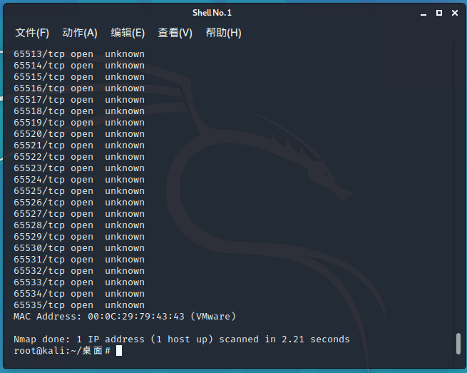

0.准备工作
静态ip:192.168.110.140
首先需要配置一下，需要攻击机与靶机处在同一网段
设置kali为NAT，并设置子网ip192.168.110.0，靶机也设置为NAT，就可以了
1.信息搜集
1 | arp-scan -l |
接下来对目标扫描全端口
1 | nmap -sS -p- 192.168.110.140 |

很明显结果有问题，全端口开放，说明做了限制
直接浏览器访问80
呃呃呃。。。看一下源码
1 | <!------Y0dkcFltSnZibk02WkdGdGJtbDBabVZsYkNSbmIyOWtkRzlpWldGbllXNW5KSFJo -----> |
看起来像是base64，解一下，还是base64，继续，得到信息
1 | cGdpYmJvbnMlM0FkYW1uaXRmZWVsJTI0Z29vZHRvYmVhZ2FuZyUyNHRh |
回到网页，点击图片会跳转至一个类似后台的页面

点击Employee portal会进入cms，
先拿解密base64得来的密码尝试登录，同时在这里有目录信息
pgibbons:damnitfeel$goodtobeagang$ta
搜索目录无有用信息，在inbox下发现三份邮件
第三封中，有SSL，放在图中目录下，访问下载
继续寻找有用信息，在首页，这里发现
点击进去在内容中发现pcap下载链接，这里出现tomcat
用keytool将前面的keystore文件来获取证书,口令是tomcat
1 | keytool -list -keystore keystore |
导出证书
1 | keytool -importkeystore -srckeystore keystore -destkeystore keystore -deststoretype pkcs12 -srcalias tomcat |
在Wireshark中打开_SSL_test_phase1.pcap流量包文件，选择菜单：编辑–首选项–Protocols–SSL，点击右边的Edit
//最新版wireshark已经 把ssl 改为 tls，其实ssl/tls都已统称通信加密协议，所以就放一块了：
大量攻击者（192.168.110.129）对192.168.110.140的流量包
这里出现了tomcat的密码，可以去访问 https://192.168.110.140:8443/_M@nag3Me/html
tomcat:Tt\5D8F(#!*u=G)4m7zB
浏览器访问会报错，这里要修改
然后改代理，开burp就能登录
未完待续…